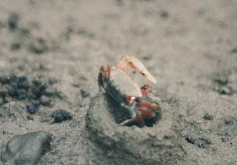

|
10.網紋招潮蟹－－喜歡在泥中玩耍的花花公子
沙蟹科 (1)特徵、習性：身體黑色，帶白色花紋。主螯紅色，末端為白色，外側表面有很多小瘤。公蟹一側螯大，一側螯小；母蟹兩側皆小。退潮時群集在水漥或小河旁的泥地覓食。蟹身全長
3～7cm ，背甲長 1.5～3.5cm
，甲身呈圓柱狀。洞口為圓形，直徑約 0.5～2.5cm
。洞口垂直地面，深約 15～35cm ，在洞的末端常 (2)分佈：在紅樹林區的小溪、水漥地，或高潮線下方的泥濘地中。 (3)小記事：公蟹的大螯不斷揮動是在求偶。洞口有土牆者為母蟹；公蟹的洞口和地面平齊。由洞口的形狀就知道洞內 |
||
|  煙囪狀洞口 |
有大螯是公蟹 |
雙螯皆小是母蟹 |